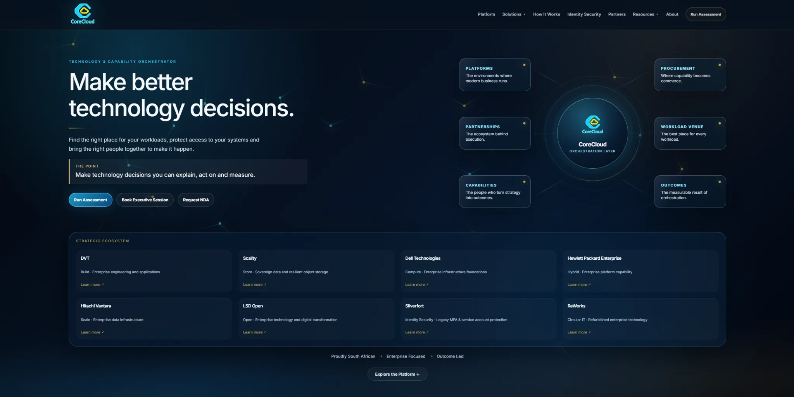

Discover
Define users, workflows, constraints and the intended business outcome.
Corporate websites, e-commerce and business applications—designed around outcomes, delivered with clear scope and accountability.
CoreCloud offers a route to discuss corporate websites, online commerce, application development and systems integration. Every engagement begins with scope, expected outcomes and a practical delivery plan.
Modern, responsive sites designed around business outcomes, clear messaging and fast user journeys.
Product catalogues, customer journeys, payments and supplier integration designed as one accountable system.
Purpose-built operational software, portals, dashboards and internal workflow tools.
Connect existing systems, reduce manual work and modernise processes with controlled delivery.
We define the outcome, establish technical constraints, agree on scope and acceptance criteria, then build and test in measurable stages. Delivery capability and schedules are confirmed during discovery.
Understand the workflow, stakeholders and commercial objective.
Agree on architecture, user experience and measurable acceptance criteria.
Build incrementally with reviewable milestones and testing.
Define handover, maintenance and ownership arrangements.
Tell us what needs to work, who it serves and what success looks like. We will discuss the most sensible approach.
A credible build begins with what the customer or employee must be able to do — and how success will be measured.
Define users, workflows, constraints and the intended business outcome.
Agree the journey, interfaces, integrations and what constitutes an acceptable deliverable.
Work through implementation and testing, with acceptance criteria established for the project.
Discuss a project ↗Tell us what the application or website needs to achieve.
We start with the workflow, the people and the outcome—not a technology shopping list. Discuss a scoped software requirement and the evidence needed to make it useful.
Tell us what you need to achieve and where the current process is falling short.
We establish scope, constraints and the relevant commercial or technical considerations.
Move forward on a clearly defined quotation, consultation or demonstration.
From enterprise technology websites to specialist product platforms, these examples illustrate the breadth of digital experiences we develop. Project ownership, engagement scope and live availability are confirmed individually.

Enterprise platform, partners and solutions
Gaming and simulation hardware storefront
Infrastructure, services and interactive AI interface
Technology services and business positioning
Services-led digital presence
Business laptops, procurement and lifecycle
Additional project screenshots can be added as individual image assets without changing the layout.
Discuss your website project ↗